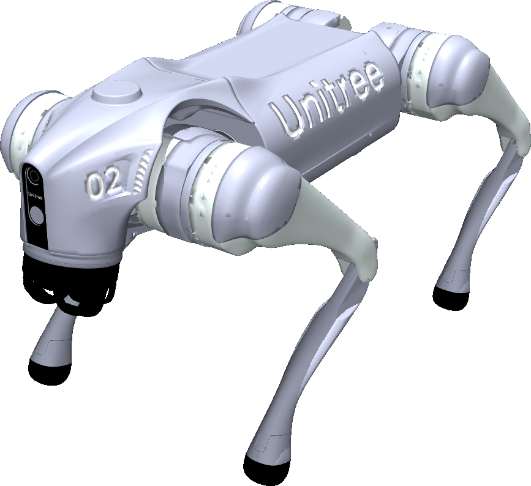
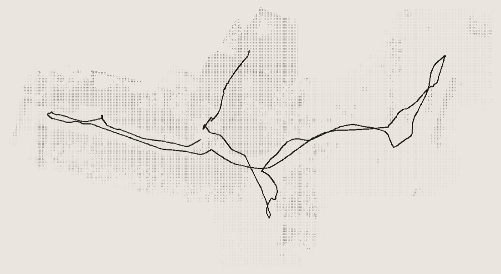
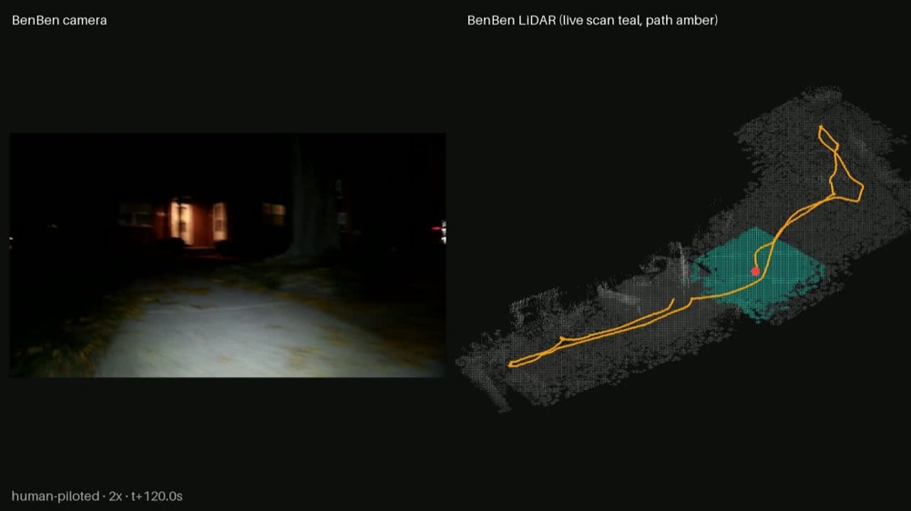
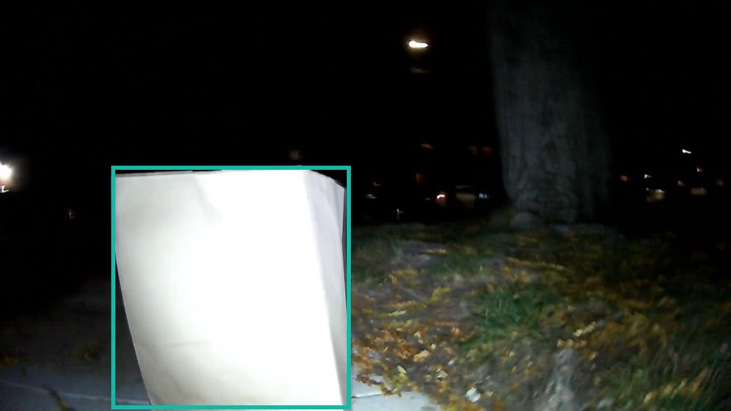
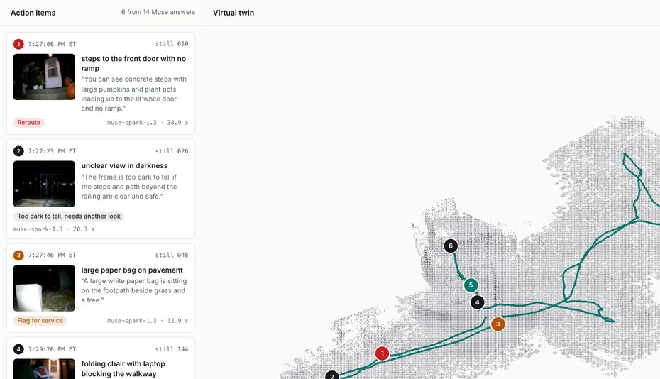
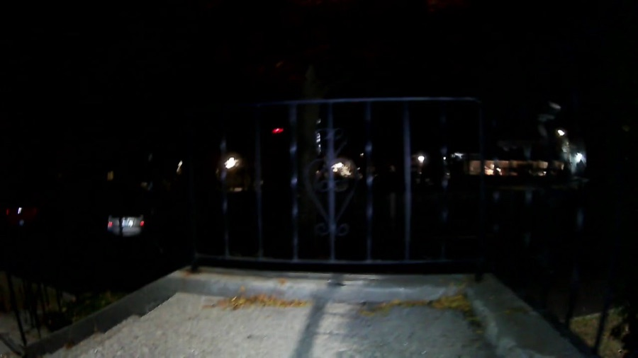

A Unitree Go2, driven by a person with the remote, records camera, LiDAR and pose.

Unitree Go2 · official model renderI got injured and ended up in a wheelchair … I had no idea if my route to the bus was even passable.

A person pilots it by remote.

A listen-only link records it all.

Flag for serviceMuse Spark picks one of four actions. SAM 3.1 boxes the obstacle.

Each finding keeps its photo and capture time.
One action per still, with a reason.
Boxed the stairs, bag, chair and entrance step.
MapAnything · 32 frames
Brush splat · 17 dB PSNR, held-out views
No motion commands sent. A person drove BenBen for the whole run.

Camera: too darkBlur · darkness · LiDAR height-map diff, before Muse
Keyed by route checkpoint, not object identity
State = latest usable observation
“Needs a human” → one question + SAM box
Staged daylight pair: revisit + verify